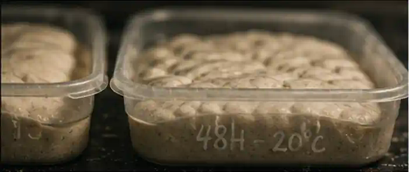
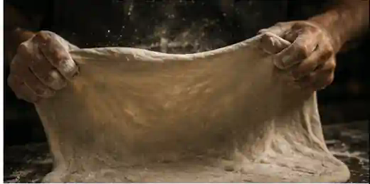
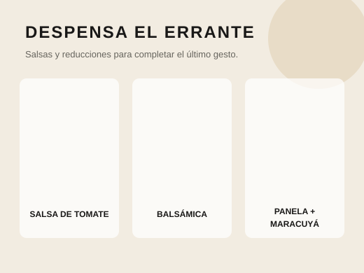

Métodos El Errante
Recetas para observar, no únicamente para obedecer.
Una receta organiza cantidades y tiempos, pero no puede anticipar completamente tu temperatura, tu equipo ni el estado de la masa. Por eso combinamos instrucciones con señales.
Biblioteca de recetas
Elige según tu tiempo, equipo y experiencia.
Rutas de aprendizaje
No todos necesitan comenzar en el mismo lugar.
La biblioteca debe permitir entrar por el tiempo disponible, el equipo, el producto o el nivel de experiencia.
Masa en el mismo día
Un método concentrado para comprender mezcla, fermentación, división y apertura en una sola jornada.
Fermentación de 24 horas
Una ruta para introducir tiempo y frío sin complicar innecesariamente el proceso.
Fermentación prolongada
Métodos que exigen mayor control de temperatura, levadura y maduración.
Horno doméstico
Decisiones de superficie, posición y precalentamiento para aprovechar equipos de menor temperatura.
Horno de alta temperatura
Apertura, humedad, carga y rotación para cocciones rápidas e intensas.
Acabados y despensa
Cómo utilizar salsa de tomate y reducciones sin cubrir la masa ni saturar el plato.
Cómo leer una receta
El resultado no cabe en un cronómetro.
Las cantidades orientan; las señales de la masa y del horno confirman cuándo avanzar.
Ingredientes
Cantidades organizadas por rendimiento, hidratación y porcentaje panadero cuando corresponde.
Cronograma
El tiempo se presenta como una secuencia de decisiones, no únicamente como una cuenta regresiva.
Señales
Volumen, textura, tensión, aroma, temperatura y color ayudan a leer el proceso.
Ajustes
Cada método identifica errores frecuentes y variables que pueden cambiar el resultado.
Antes de mezclar
La receta empieza con las condiciones que ya tienes.
Temperatura ambiente, tipo de horno, superficie, horario y experiencia determinan qué método tiene sentido.
Una receta que funciona en una cocina puede requerir ajustes importantes en otra. Registrar el contexto permite que el siguiente intento parta de información y no únicamente de memoria.


Acabados
El horno no siempre es el último paso.
Hojas frescas, aceites y reducciones pueden transformar aroma, acidez y persistencia después de la cocción.
La reducción balsámica con panela e infusión de maracuyá debe entenderse como un acabado concentrado: parte de una base balsámica, se endulza con panela y recibe una nota aromática de maracuyá. No es una salsa de fruta ni una mermelada.
Explorar la despensa